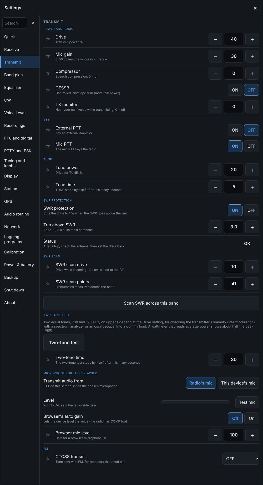
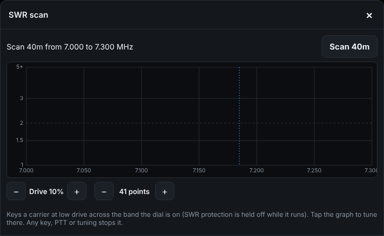
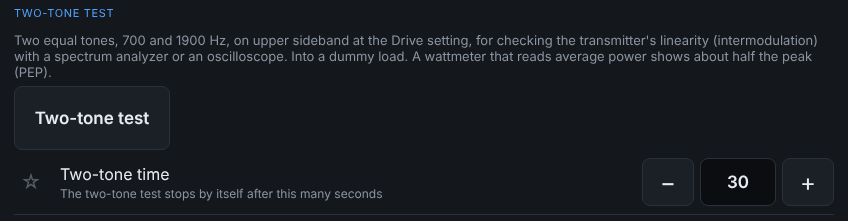

Transmit#
More → Transmit: power and microphone, PTT, the tune carrier, SWR protection and the SWR scan, a microphone in another device's browser, and the FM repeater tone.

Power and audio#
- Drive (1–100 %) is the transmit power. After the PA power calibration, 100 % gives the same power on every band.
- Mic gain (0–50) is the codec's mic input level in percent, as on the earlier sBitx software. (A USB headset's microphone has its own gain: see Headset and USB audio.) Talk at your normal level and watch the TX scope on the Quick page: the peaks should just reach the clip line.
- Compressor (0–10) raises the average level of speech; 0 is off.
- CESSB (controlled-envelope SSB) holds the SSB peaks down so the average power can be higher for the same peak power.
- TX monitor (0–10) plays your own voice in the speaker while you transmit, at a modest level so it doesn't feed back into the microphone. Headphones are best; with the speaker, keep it low.
The transmit equalizer shapes the microphone after the compressor.
ALC meter#
While transmitting, a thin bar under the power meter (and ALC on the transmit strip at the top of an open menu) shows how hard the transmitter is being driven:
- SSB and AM: the peak of your modulation against the voice clipper, from −20 dB to +10 dB. The amber zone starts at the clipper (two-thirds of the way along). Green means you are below it, with no limiting. Amber means the peaks are being clipped by that many dB: a few dB is speech processing. Red means more than 6 dB, which sounds distorted, so lower the Mic gain or the Compressor. FM is measured against full deviation.
- Every mode: when the power would pass the band's power limit, the ALC holds it down, and that reduction is added in.
- CW, digital modes and TUNE have no clipper, so the bar moves only when the power ALC acts.
The figure (ALC 3 dB) is the total limiting, shown on the transmit strip
and as the bar's tooltip. Hamlib programs can read it as the ALC level
(0–1 for 0–10 dB).
PTT#
- External PTT keys GPIO 26 while transmitting, for an external amplifier.
- Mic PTT: whether the microphone's PTT keys the radio. The mic jack's wiring, and other microphones that fit it, are on sBitx hardware.
The RX/TX button in the header is press-and-hold PTT. The transmit
timeout (TOT, 10 minutes) un-keys a stuck PTT; see
Power and battery.
Tune#
Tune (on the Quick page, or console tune on) sends a
steady carrier at Tune power for Tune time seconds, for an antenna tuner.
While it is on, the Tune button shows the power and SWR, and a red strip across the top of the menu shows them too, with a bar for the power and a Stop button. The menu covers the meter, so you can watch the tuner without closing it. The strip appears whenever you transmit with a menu open (the two-tone test, the SWR scan, PTT); the SWR turns amber at 2 and red at 3 or on a trip.
SWR protection#
On by default. If the SWR goes above Trip above SWR (1.5–10; 3.0 suits
most antennas) on any transmit path, the drive drops to 1 % and remote
drive changes are ignored. Status shows OK or the trip; fix the
antenna, then Clear trip and set the drive back. Turning protection off
takes two taps and is not recommended. Console: maxvswr, swrreset.
SWR scan#
Scan SWR across this band (also in the band sheet) keys a carrier at SWR scan drive (10 %) and steps it across the band the dial is on in SWR scan points steps (41 points, about 9 s), drawing SWR against frequency and marking the lowest point. Tap the graph to tune there. A key, PTT, tuning or Stop ends it, and the dial, mode and drive are put back.
The drive can be anything from 1 to 100 %. The normal SWR protection is held off while the scan runs, because a trip would end it at the first bad point, often a band edge. Instead the scan protects the PA itself: above 25 % drive, wherever the SWR goes past the trip level it drops to 25 % at once and goes back up when the match is good again. Every point is still measured.

Two-tone test#
Two-tone test (on this page, or add it to the Quick page) sends two equal tones, 700 Hz and 1900 Hz, on upper sideband at the normal Drive. It is the standard signal for checking an SSB transmitter's linearity: on a spectrum analyzer the intermodulation products show beside the two tones, and on an oscilloscope the envelope should be clean, un-flattened arches.
- Connect a dummy load rated for the power (and the analyzer through a suitable attenuator or sampler).
- Set the Drive you want to test.
- Tap Two-tone test. The header shows 2-TONE.
- It stops after Two-tone time seconds (30), or tap the button again, or press PTT.
The peak envelope power (PEP) is twice the average, so a wattmeter that reads
average power shows about half the PEP. The band plan, SWR protection and the
power limits apply as for any transmission. Console: twotone on|off.

Talking from another device#
A phone, tablet or laptop can transmit with its own microphone. Browsers
only allow the microphone over HTTPS, so open https://<radio>:8443/ and
accept the certificate warning once.
- More → Transmit → Microphone for this browser: choose This device's mic and allow the microphone when the browser asks.
- Test mic shows the level. Browser's auto gain lets the device
level your voice; Browser mic level (
WEBTXLVL) is the gain at the radio. - Hold PTT and talk (USB, LSB, AM, FM, DIGI or RADE). The audio goes through the usual chain: compressor, equalizer, CESSB.
Releasing PTT, closing the page, or 1.5 s without audio (lost Wi-Fi) un-keys the radio. Each browser keeps its own choice; the radio's own screen stays on the radio's microphone.
FM#
CTCSS transmit sends one of the 38 standard tones with FM, for repeaters that need one. Pick it from the list; CTCSS receive is on the Receive page.
All transmit settings#
Power and audio
| Setting | Console name | Default | Values | What it does |
|---|---|---|---|---|
| Drive | DRIVE | 40 | 1–100 | Transmit power, % |
| Mic gain | MIC | 30 | 0–50 | Mic input level, % (as on the sBitx) |
| Compressor | COMP | 0 | 0–10 | Speech compression, 0 = off |
| CESSB | CESSB | OFF | ON, OFF | Controlled-envelope SSB (more talk power) |
| TX monitor | TXMON | 0 | 0–10 | Hear your own voice while transmitting, 0 = off |
PTT
| Setting | Console name | Default | Values | What it does |
|---|---|---|---|---|
| External PTT | ePTT | OFF | ON, OFF | Key an external amplifier |
| Mic PTT | LOCALPTT | ON | ON, OFF | The mic PTT keys the radio |
Tune
| Setting | Console name | Default | Values | What it does |
|---|---|---|---|---|
| Tune power | TNPWR | 20 | 1–100 | Drive for TUNE, % |
| Tune time | TNDUR | 5 | 2–30 | TUNE stops by itself after this many seconds |
SWR protection
SWR protection on/off, the trip level and Clear trip are on this page; console maxvswr.
SWR scan
| Setting | Console name | Default | Values | What it does |
|---|---|---|---|---|
| SWR scan drive | SCANPWR | 10 | 1–100 | Drive while scanning, %; above 25 % it drops to 25 % wherever the SWR is past the trip level |
| SWR scan points | SCANPTS | 41 | 5–201 | Frequencies measured across the band |
Two-tone test
| Setting | Console name | Default | Values | What it does |
|---|---|---|---|---|
| Two-tone time | TTDUR | 30 | 5–120 | The two-tone test stops by itself after this many seconds |
Microphone for this browser
| Setting | Console name | Default | Values | What it does |
|---|---|---|---|---|
| Browser mic level | WEBTXLVL | 100 | 0–200 | Gain for a browser microphone, % |
FM
| Setting | Console name | Default | Values | What it does |
|---|---|---|---|---|
| CTCSS transmit | CTCSS_TX | OFF | OFF or one of the 38 standard tones (67.0–250.3 Hz) | Tone sent with FM, for repeaters that need one |